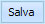

L'anagrafica del Cliente può essere modificata selezionando il nome del Contatto e cliccando due volte con il tasto sinistro del mouse.
Si aprirà una maschera i cui campi sono tutti modificabili.
Per salvare le modifiche cliccare sul tasto 
Per chiudere la finestra senza modificare i dati cliccare sul tasto